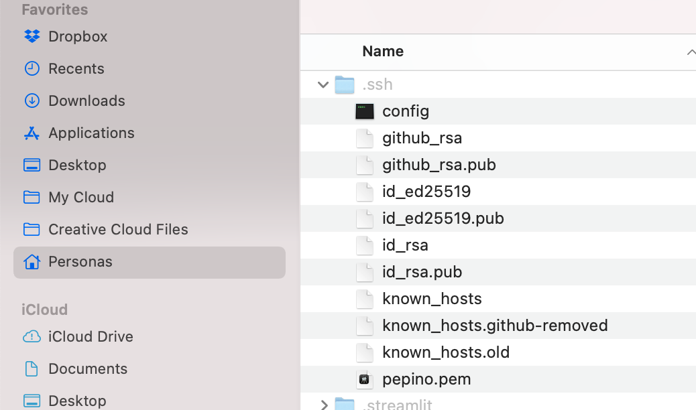
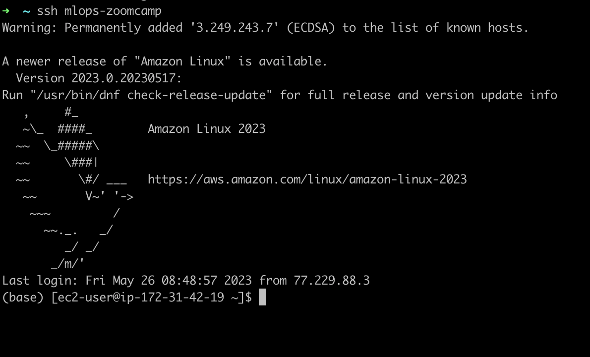

The beginning of the MLOps Zoomcamp course developed by Alexey consists of setting up the environment that allows my local machine (a MacBook pro) to interact with the services offered by AWS. Although the steps to follow are very well detailed in this video or in these notes, there are some issues still worth noting for Mac users.
1. Connection of EC2 to local machine
As suggested by the instructor, the most convenient type of instance is a t2,xlarge Amazon Linux. Once launched on AWS management console the way to connect to your local machine is by locating the .pem created while starting the instance in the .ssh (hidden) folder and running the following command in the terminal
ssh -i ~/.ssh/<name of pem_file.pem> ec2-user@<public IPv4 address>

Note that the user name associated with Mac is not @ubuntu but ec2-user instead. Apart from that, the remaining steps detailed in the video to provide an alias to Host remain the same. The aim for that is to avoid typing such a long instruction and connect it using the alias instead.

2. Installation of Docker
The installation of Docker on EC2 is not on Linux so the instructions using the apt command will not work. As an alternative there are options that recommend installing the Docker Community Edition Package using the following commands on the terminal
sudo yum update -y
sudo amazon-linux-extras install docker
Yet, if using an Amazon Linux instance from 2023, using amazon-linux-extras is likely to render an error:
sudo: amazon-linux-extras: command not found
This is because the instance from 2023 does not have amazon-linux-extras. To overcome this problem simply use and it will work 🤞
sudo yum install -y docker